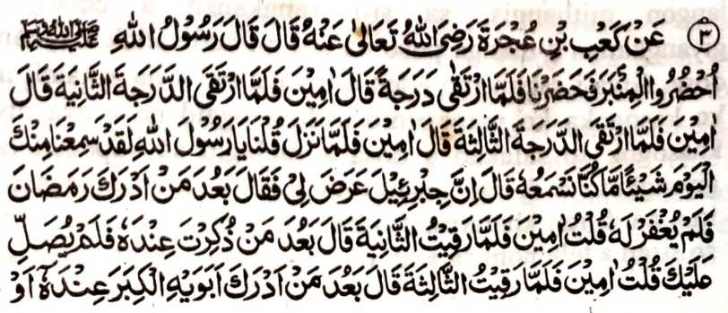
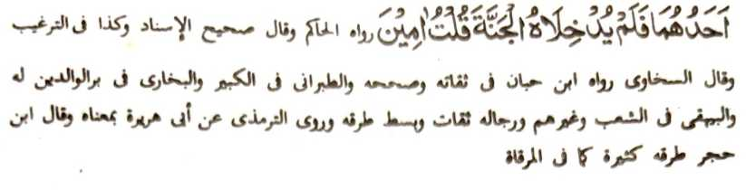

Hadith 3


Miyakathitayan ko Ka'b bin 'Ujrah (Radhiallaho ‘Anho) a pitharo iyan a pitharo o Rasulollah (Sallallaho ’Alaihi Wasallam), “Obay kano sangka-iya Mimbar!” Miyobay kami, na oriyan niyan na somiyakat sa sakerit na pitharo iyan. “Aameen!" So peman so kiyasakat iyan ko ika dowa kerit na pitharo iyan peman so, “Aameen!” So peman so kiyasakat iyan ko ika telo kerit na pitharo iyan peman so, “Aameen!” Oriyan o kiyatepad iyan na pitharo ami, “Ya Rasulollah! Sabenar a miyaneg ami reka sangka-iya gawi-i so nganin a da mi reka den maneg ko miya-ona.” Minisembag iyan, “Mata-an a so Jibrail (‘Alaihis Salaam) na tomiyoron raken na pitharo iyan, ‘Miyakawatan ko limo so tao a riya-ot iyan so Ramadhan na da sekaniyan karila-i', na miyatharo aken so Aameen! Soden so kiyasakat aken ko ika dowa kerit na miyatharo iyan, '‘Miyakawatan ko limo so tao a inaloy ka si-i rekaniyan na da ka niyan salawati', na miyatharo aken so Aameen! So peman so kiyasakat aken ko ika telo kerit na miyatharo iyan ‘peman, 'Miyakawatan ko limo so tao a riya-ot iyan so mbala a lokes iyan ko kiyalokes iran o di na so isa kiran a dowa lokes iyan na da niyan misoled sa Sorga', na miyatharo aken so Aameen!”
Si-i sangka-iya Hadith, na miya-ilay ron a so Jibrael ('Alaihis Salaam) na pitharo iyan so telo a paninta a so mambo so Rasulollah (Sallallaho ‘Alaihi Wasallam) na miyatharo iyan so “Aameen!” ko omani isa on. Si-i ko [kitab a] 'Durre Manthur’ na miyapanothol a so Jibrael ('Alaihis Salaam) na piyando-an niyan so Rasulollah (Sallallaho ‘Alaihi Wasallam) sa katharo-a niyan ko 'Aameen'. Si-i ko kababaloy niyan a Mala-ikat a maporo-i daradat, na so pangeni o Jibrael (‘Alaihis Salaam) sangkanan a telo a paninta na matatangked a kakhatarima iran. Phangenin aken ko Allah (Subhaanaho Wa Ta’ala) ko kada a tamana o Limo Iyan, a tabangan tano Niyan go ilidas tano Niyan sangkanan a piyamaka-leklek.
So paganay a tao a miya-aloy sangkanan a Hadith na giyoto so riya-ot iyan so Ramadhan, a olan-olan a babarakaten ago kaphiya-piya, ogaid na itataros iyan den a gi-i niyan kandosa ko kapezagad o gawi-i go indadarainon iyan so paliyogat rekaniyan; giyoto-i sabap a da niyan maparoli so rila. So Ramadhan na olan-olan a Kapedi o Allah (Subhaanaho Wa Ta’ala), na opama apiya si-i sangka-iya olan-olan na aya nggalebeken no tao na dosa ago kandarainon, na anda manaya-i ka-iinama niyan sa karila-i ko manga dosa niyan? O di niyan maparoli so kasoso-at o Allah (Subhaanaho Wa Ta’ala) si-i ko soled a Ramadhan, na anda pen a masa? Aya bo a okit a kakowa-a ko kasoso-at o Allah (Subhaanaho Wa Ta’ala) na so kinggolalanen ko paliyogat Iyan non si-i ko [soled o] Ramadhan, lagid o kapamowasa, kitindegen ko Taraweeh ago so gi-i kathaobata ko miyanga-oona dosa. Aya ika dowa a pekhadoan-doanan a tao na sekaniyan so miyaneg iyan so ingaran o Rasulollah (Sallallaho ‘Alaihi Wasallam) na da niyan kasalawati. Sabap si-i na so saba-ad ko manga olama na ibebetad iran sa ‘Wajib’ so katharo-a ko ‘Darood’ (Salawat) igira miya-aloy so ingaran o Muhammad (Sallallaho ‘Alaihi Wasallam). Si-i ko saba-ad a Hadith, na so tao a di niyan noto manggola-ola na kiyadoan-doanan ago kiyawis-wisan. Giyangkanan a manga tao na inaloy siran sa giyoto so miyada siran ko lalan ko Sorga, o di na ped ko manga tao a phakasoled ko Naraka Jahannam, o di na so siran a di ran khailay so pithamanan a mapiya bontal o Rasulollah (Sallallaho ‘Alaihi Wasallam). So manga Olama na bigan tano iran sa mbaram-barang a osayan angka-iya a manga Hadith. Aya titho a benar na so di kapetharo-a ko ‘Darood’ na tanto a kalapis. ‘Engka-ino to? Aya katimbel iyan na so manga limo a inibegay sangka-iya ummat a minggolalan ko Rasulollah (Sallallaho ‘Alaihi Wasallam) na tanto a mala na di khagaga o langon o kitab ago so manga osiyat so bo so kiropa-an non. So Limo Iyan reketano na tanto den a mala. Giyoto-i sabap a patot den a ipami-is. Salakao ro-o na so balas o ‘Darood’ na tanto a mala. So Hadith na ininda-o niyan reketano a: Saden sa tao a salawatan niyan so Rasulollah (Sallallaho ‘Alaihi Wasallam) sa maka-isa na salawatan sekaniyan o Allah (Subhaanaho Wa Ta’ala) sa makasapolo ago ipamangeni sekaniyan o manga Mala-ikat (sa rila). So langowan o dosa niyan na perila-an, go so daradat iyan na ipangkat, go zapa-aten sekaniyan o Rasulollah (Sallallaho ‘Alaihi Wasallam) ko Gawi-i a Kaphangokom. Ped ro-o na so ididiyandi a manga balas na: kakhowa so kasoso-at o Allah (Subhaanaho Wa Ta’ala), go so limo iyan ago so kapakalidas ko rarangit Iyan [a Allah (Subhaanaho Wa Ta’ala)]; go kalinding ko piyakalek-lek ko Gawi-i a Qiyamah, go so kakha-ilaya ko darepa iyan ko Sorga ko masa niyan pen sa donya. Liyo si-i na aden pen a ididiyandi [a balas] a kapakalidas ko kamer-mer ago so kazikota, go kapakarani ko Nabi (Sallallaho ‘Alaihi Wasallam), go so ididiyandi a tabang ko kiphapantagen ko manga rido-ai ago so ididiyandi a kakhapamola o babaya-on o manga ped a tao. So manga Ulama sa Fiqhi na miyatharo iran a ‘Fardh’ (paliyogat) so katharo-a ko Darood sa maka-isa ko tenday o kaoya-goyag, go ‘Wajib’ so katharo-aon oman ma-aloy so ingaran o Rasulollah (Sallallaho ‘Alaihi Wasallam); aden pen a inibetad iyan sa ‘Mustahab’ (khapakay).
Ika telo a tao a miya-aloy sangkanan a Hadith na so tao a riya-ot iyan so mbala a lokes iyan o di na so bo so isa kiran [a mbala a lokes iyan] ko masa a kiyalokes iran, na da niyan maparoli so Sorga misabap sa kapezasagokora niyan kiran. So manga ‘Ulama’ na pitharo iran, a si-i ko omani paliyogat a galebek (a penggola-olaan), na paliyogat so ka-onoti ko sogo-an o mbala a lokes. Di khapakay o ba so tao na ba niyan siran di pagadati ago paliyogat ko isa a kapangalimbaba-an niyan kiran apiya di siran ped ko mapaparatiyaya. Di khapakay o ba poro-on o isa so lago niyan a kaombawan niyan so lago iran, go di khapakay o ba niyan kiran pembethon so manga ingaran niran, go paliyogaton so kapaka-adiyadiya niyan kiran. O iphanalao kiran so mapiya ago izapar kiran so marata na tanto a mainay a kaphaka-okitaon, go tatap so kipephamangenin kiran [sa toro-an] apiya igira di ran tharima-an. Si-i ko langon o maola-ola, na paliyogat so kapephagadati kiran. Si-i ko satiman a Hadith na miya-aloy ron: “Aya makalelebi ko manga pinto a izoled sa Sorga na so ama, o kabaya-a ka na phiya-piya-i ngka, o di ngka kabaya na geba-a ngka. ’ Aden a Sahabi a iniza-an niyan so Rasulollah (Sallallaho Alaihi Wasallam), “Antona-ai manga kabenar o mbala a lokes?” Minisembag iyan, “Siran so Sorga-a ka ago so Naraka-a ka”, (ma-ana so kasoso-at iran na khisoled ka niyan ko Sorga na so di ran kasoso-at na khisoled ka niyan ko Naraka). Ped ro-o na miya-aloy pen sa Hadith a: “Igira so ma-onoten a wata a mama na ilain niyan sa kailay a babaya ago limo so mbala a lokes iyan, na aya balas iyan na lagid o tiyarima a Hajj.” Si-i ko isa a Hadith na miya-aloy ron: “Liyo ko kisakoton ko Allah (Subhaanaho Wa Ta’ala), na so langon a salakao a dosa a pherila-an o Allah (Subhaanaho Wa Ta’ala) ko kabaya Iyan. Ogaid na tanto a mala a siksa a imbegay Niyan ko di kaonoti ko mbala a lokes si-i pen ko masa o tao sa donya ko ona-an pen o da niyan kapatay.” Aden a Sahabi na miyatharo iyan, “Ya Rasulollah (Sallallaho ‘Alaihi Wasallam)! a kabaya aken a kazong aken sa ‘Jihad’.” Mini-izaon o Rasulollah (Sallallaho ‘Alaihi Wasallam), “Ba bibiyag so ina-a ka?" Minisembag iyan, “Oway”. Oriyan niyan na miyatharo o Rasulollah (Sallallaho ‘Alaihi Wasallam), “Zasagokora ngka sekaniyan, ka so kasorga-an ka na si-i matatago ko kadadapo-an niyan.” Aden pen a isa a Hadith a pitharo iyan, “So kasoso-at o Allah (Subhaanaho Wa Ta’ala) na matatago ko kasoso-at o ama o tao, go so di kasoso-at o Allah (Subhaanaho Wa Ta’ala) na zisi-i ko di kasoso-at o ama o tao.” Misabap sangkanan a miyanga-aaloy, na miyakenal tano opama ka miyamatay den so manga lokes a da siran kapagadati o manga wata iran na da pen a okit a kapakabawi o manga wata. Pitharo o “Shari’ah” a aden a okit. So Hadith na ininda-o niyan reketano a sangkanan a maola-ola, na tatapa o isa so kipephamangenin niyan kiran sa rila, a misabap ro-o, na mi-itong sekaniyan ko manga maonoten sa lokes iyan. Isa a Hadith a pitharo iyan a aya pithamanan a mapiya a mapenggola-ola o tao ko oriyan o kiyapatay o ama iyan na so kapharanga-i niyan sa mapiya ko manga ginawa-i ago bolayoka o ama iyan (sa lagid den o parangay kiran o ama iyan).